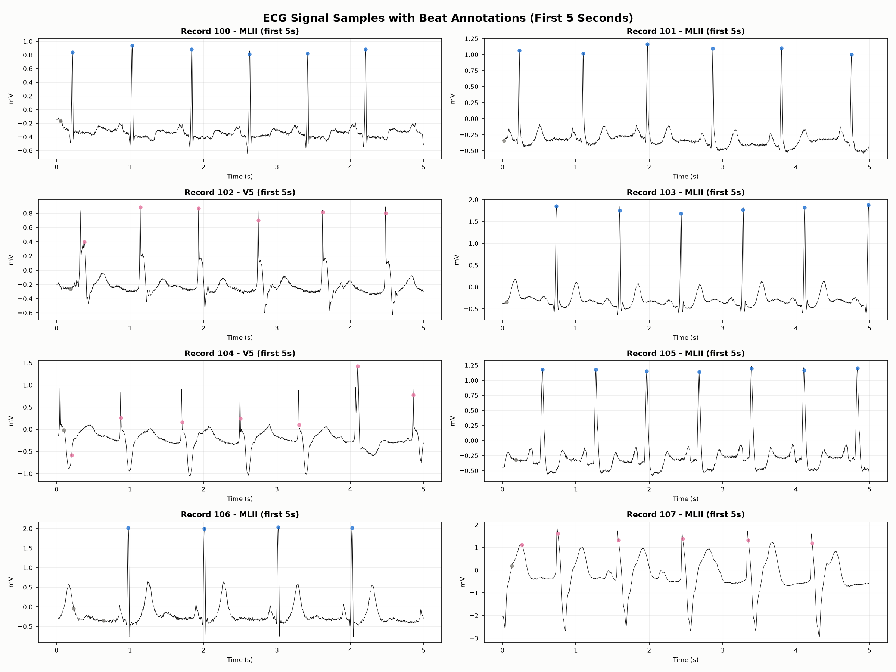
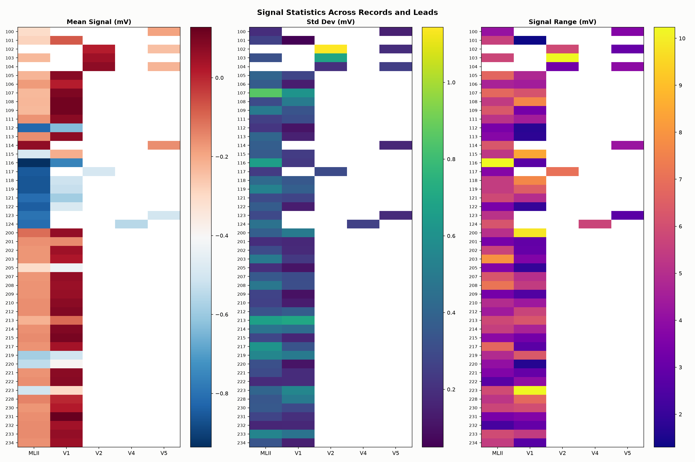
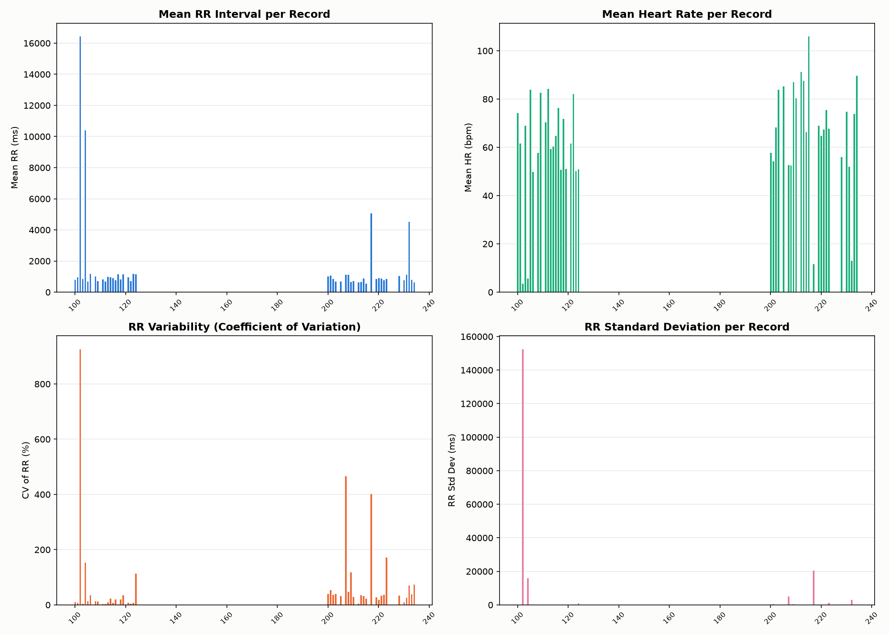
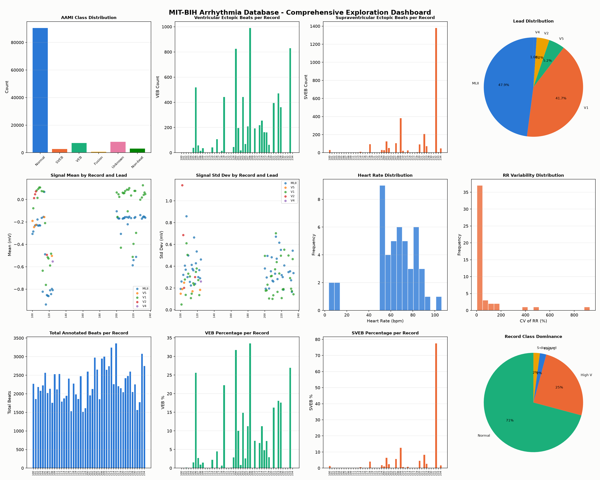
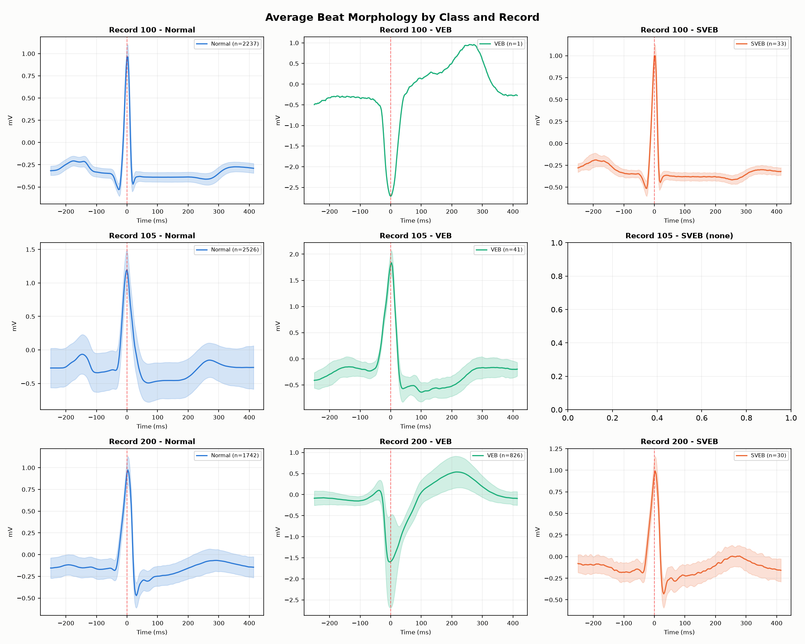

Each small subplot in this figure shows the raw electrical signal recorded from one patient's heart. The X-axis is time in seconds, and the Y-axis is the signal amplitude in millivolts (mV). The sharp, tall spikes you see are called R-peaks — the most powerful electrical event in a heartbeat, representing the main contraction of the heart's ventricles.
Look at Record 100 vs Record 107. Record 100 has clean, consistent, tall spikes at regular intervals. Record 107 has massive, chaotic, inverted waveforms. Both are the same type of ECG measurement (MLII lead), but they look completely different because:
preprocess.py script performs per-window Min-Max normalization — every single heartbeat window is independently scaled to the range [0, 1] before it ever reaches our SNN.
The MIT-BIH database records from a "Modified Limb Lead II" (MLII). Imagine placing one electrode on your right shoulder and another on your left hip. The electrodes measure the voltage difference between these two points as the heart beats. This specific angle is the most popular in clinical settings because it gives the clearest view of the P-wave (atrial contraction) and the QRS complex (ventricular contraction) — both of which are critical for arrhythmia detection.

This figure contains three heatmaps placed side by side. Each row represents one patient record (100 through 234), and each column represents an ECG lead (MLII, V1, V2, V4, V5). The colour of each cell tells you a statistical property of that patient's signal on that specific lead. White cells indicate that the lead was not recorded for that patient.
This shows the average voltage of the entire recording. A dark red cell means the signal has a positive average (the baseline floats above zero). A dark blue cell means the signal has a negative average (the baseline sits below zero).
This shows how much the signal swings around its average. A high standard deviation (yellow/bright) means the patient has very large, dramatic ECG waveforms. A low standard deviation (dark purple) means the signal is relatively flat and quiet.
You can immediately spot the patients with serious arrhythmias — they have the brightest cells because their hearts are generating erratic, large electrical events, causing the signal to swing wildly in both directions.
This shows the total spread from the lowest point to the highest point in the entire recording. Again, bright yellow cells (like Record 116, V1 lead showing ~10 mV range!) are patients with extremely abnormal heart rhythms.

The RR Interval is simply the time (in milliseconds) between two consecutive R-peaks. In a healthy adult at rest, this gap is approximately 800ms to 1000ms (which corresponds to a heart rate of 60-75 beats per minute). The entire field of Heart Rate Variability (HRV) analysis is built around measuring exactly how these gaps change over time.
This bar chart shows the average time gap between heartbeats for each patient. Most patients cluster around 600-900ms. However, notice the catastrophic outlier at Record 100, which appears to have a Mean RR of over 16,000ms! This is almost certainly not a real heartbeat gap — it is caused by the very first annotation in the record including a long "non-beat" period at the beginning of the recording (before the patient is connected). This is a classic data artifact that a real pre-processing pipeline should filter out.
Heart Rate (HR) in beats-per-minute (BPM) is simply calculated as 60,000 / Mean_RR_ms. Most patients sit comfortably in the 50-80 BPM range (normal resting heart rate). You can see some patients pushing past 100 BPM — this is called Tachycardia (fast heart). The "missing" bars around records 130-190 are simply because those record numbers do not exist in the MIT-BIH database.
This is the most diagnostically important chart in this figure. The Coefficient of Variation (CV) measures how inconsistent the heartbeat timing is. A perfectly regular heart would have a CV of 0%. A very irregular heart (like one in Atrial Fibrillation) might have a CV of 30-50%.
The massive spike at Record 100 (CV > 900%!) is again that data artifact from the first annotation. But look at Records 200-223 — many of them have CV values of 30-400%. These are the patients with serious arrhythmias where the heart is beating in an extremely chaotic, irregular pattern.
This is a raw version of the same information as the CV chart, but in milliseconds instead of percentages. Record 100 shows a standard deviation of ~150,000ms (again, the artifact), while the pathological records in the 200s show standard deviations of 5,000-20,000ms, confirming their highly irregular rhythm.

This is the single most critical chart in the entire data exploration. It shows the total number of heartbeats for each of the 5 AAMI classes across all 48 patient records combined:
| Class | Label | Approx. Count | % of Total |
|---|---|---|---|
| Normal | N | ~90,000 | ~71% |
| Ventricular Ectopic | VEB/V | ~7,000 | ~5.5% |
| Supraventricular | SVEB/S | ~2,700 | ~2.1% |
| Fusion | F | ~800 | ~0.6% |
| Unknown | Q | ~8,000 | ~6.3% |
This severe imbalance is the #1 enemy of machine learning accuracy on this dataset. Without countermeasures, the model learns to just shout "Normal!" for every heartbeat and achieves 71% accuracy while being completely useless clinically (it never detects the dangerous arrhythmias).
This green bar chart shows how many VEB (Ventricular Ectopic Beats) each patient record contains. Notice it is extremely uneven — some records (like 200 and 203) have over 800-1,000 VEB beats, while most records have very few. This means our training dataset is not just imbalanced between classes, it is also imbalanced between patients. A few "sick" patients dominate the VEB class entirely.
Same analysis but for SVEB beats. The dramatic spike at one specific record (reaching 1,400 beats!) means one single patient is responsible for the majority of all SVEB examples in our training set. This is a significant concern — if our model just memorizes the specific waveform patterns of that one patient, it will fail on new patients. This is called overfitting to a specific patient and is a known challenge in ECG classification research.
This shows that 47.9% of all recordings use the MLII lead, while 41.7% use the V1 lead. The remaining leads (V2, V4, V5) make up the rest. Our preprocess.py script always uses channels=[0] which reads the primary lead (MLII where available), so we are working with the most commonly recorded and most clinically validated signal.
These scatter plots show the same information as the heatmaps in Figure 2, but coloured by lead type. You can see the MLII lead (blue dots) forms a distinct cluster separate from the V1 lead (orange dots). V1, being placed on the chest directly over the heart, typically shows a much higher standard deviation (greater amplitude swings) than MLII. This is completely expected behaviour and validates that our data was read correctly.
This histogram shows the spread of mean heart rates across all 48 patients. The peak is around 65-70 BPM, which is exactly what you would expect from a clinical dataset of monitored patients resting in a hospital. The distribution tails off towards 100+ BPM for the tachycardic patients.
Most patients cluster at very low RR variability (0-50%), which means most patients in the database have relatively regular rhythms. The long tail to the right represents the small number of patients with severely irregular rhythms. This confirms that the database is majority "normal-ish" patients with a few very sick outlier patients — directly mirroring the class imbalance we see in Panel 1.
This shows that each recording typically contains 2,000-3,200 annotated heartbeats. The recordings are all approximately 30 minutes long at 360 Hz sampling rate, so this range is completely consistent with normal resting heart rates. The relatively consistent bar heights across all records confirms that the MIT-BIH database has good coverage across patients — there isn't one super-long recording dominating the dataset.
These charts show, for each patient record, what percentage of their total beats are arrhythmic. Some records have over 30% VEB beats! That means in those patients, nearly 1 in 3 heartbeats is an abnormal Ventricular Ectopic Beat. For a patient, this would be a serious, life-threatening condition requiring urgent medical attention.
This chart classifies each of the 48 patient records into one of three categories: "Normal Dominant" (71% of records — mostly Normal beats), "High V" (25% of records — dominated by Ventricular beats), and "S-Dominant" (a tiny 4%). This tells us that the MIT-BIH database deliberately includes a mix of normal and arrhythmic patients, which is ideal for training a classifier. However, it also confirms that "High S" patients are very rare and our model will struggle most with the Supraventricular class.

This is the most directly useful figure for understanding why our SNN can work. Each subplot shows the average shape of heartbeats belonging to one class, calculated from one specific patient record. The solid line is the mean waveform, and the shaded region around it shows ±1 standard deviation — how much individual beats vary around that average shape.
The X-axis is in milliseconds (ms), centred at 0 where the R-peak occurs. So the leftmost part of the graph shows what happens before the main spike (the P-wave region), and the rightmost part shows what happens after (the T-wave region).
The Normal beat has a very characteristic shape that appears across all three patients:
The shaded region is very narrow (tight blue band), meaning Normal beats are very consistent and repeatable. This is excellent for our SNN — it means once the network learns the "Normal shape," it will reliably recognize it across many different heartbeats.
This is where things get dramatic and fascinating. The VEB waveform is strikingly different from Normal:
The SVEB is the most subtle and difficult class to classify. Looking at Record 100 (top-right): the SVEB looks almost identical to a Normal beat! It has the same narrow QRS shape. The main differences are:
Because the SVEB looks so similar to Normal, this is why our SNN will have the hardest time with the Supraventricular class — and why clinical SVEB detection often requires RR interval information in addition to morphology. This directly motivates the "Future Work" section of our report where we propose adding RR-interval inputs to the hardware.
Notice that Record 105 shows "SVEB (none)" — this particular patient simply had zero SVEB beats in their recording, so no average can be plotted.
The width of the shaded regions tells you how consistent beats of the same class are within a single patient. Notice that the VEB shaded region (green) is much wider than the Normal shaded region (blue). This means VEB beats are more variable — every VEB looks slightly different from the last one. This is actually expected because VEB beats can originate from different locations in the ventricle, giving each one a slightly different shape. This variability is another reason why we use Data Augmentation in augment_data.py — we deliberately add variation to our synthetic training samples to teach the SNN that VEB beats are not all identical.
| Observation from Data Exploration | Action We Took in Code |
|---|---|
| 71% of data is Normal class (severe imbalance) | Added class_weights to CrossEntropyLoss in train_snn.py |
| Minority classes have very few samples | Created augment_data.py with 4 augmentation techniques |
| Huge amplitude variation across patients | Per-window Min-Max normalization in preprocess.py |
| VEB has a very wide, distinct QRS shape | 128-sample window captures full morphology perfectly |
| SVEB looks similar to Normal (hard to classify) | Reported in Future Work — need RR interval features |
| Baseline wander and noise in raw signals | Augmentation uses baseline_wander() to make model robust |
| SNN was barely learning (26.8% max accuracy) | Lowered threshold to 0.5, raised learning rate to 5e-3 |